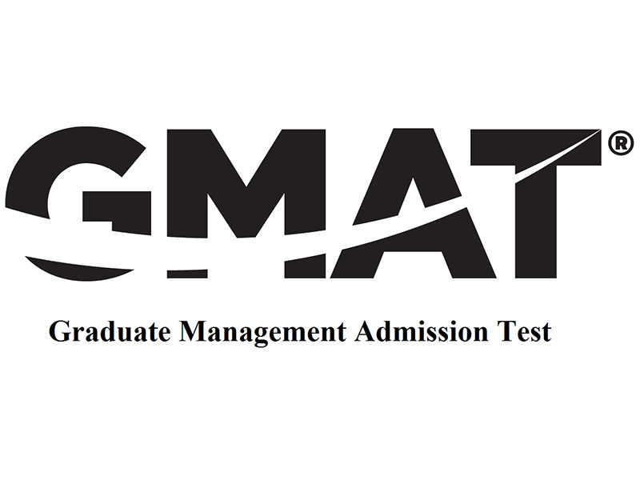
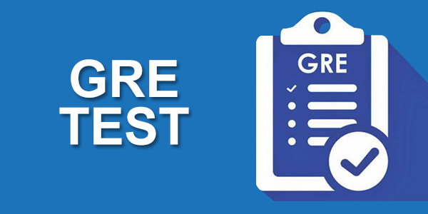

Courses
We offer following courses:
IELTS
The IELTS course aims to prepare students with the skills and strategies needed to undertake the IELTS test with confidence and to succeed in the IELTS examination. The course will give students intensive practice in each module, making sure the students know exactly how to make best use of their time. Students will also do practice tests in each skill under exam conditions and instructors will give them feedback on their performance to help them improve.
GMAT
The Graduate Management Admission Test (GMAT) is a computer-adaptive standardized test in mathematics and the English language for measuring aptitude to succeed academically in graduate business studies. Business schools use the test as a criterion for admission into graduate business administration programs throughout the world.
GRE
The Graduate Record Examinations (GRE) is a standardized test that is an admissions requirement for many graduate schools in the United States, in other English-speaking countries and for English-taught graduate and business programs world-wide. Created and administered by Educational Testing Service (ETS) in 1949, the exam aims to measure verbal reasoning, quantitative reasoning, analytical writing and critical thinking skills that have been acquired over a long period of time and that are not related to any specific field of study. The GRE General Test is offered as a computer-based, computer adaptive exam administered by selected qualified testing centers worldwide.
